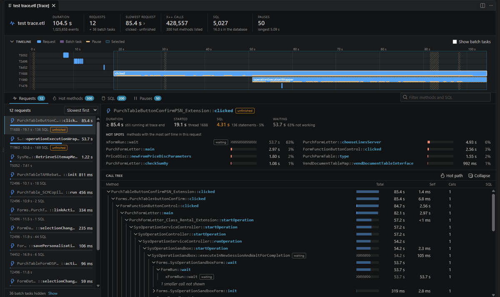

Analyze Trace¶
Analyze Trace opens a Dynamics 365 performance trace (.etl) in a panel inside VS Code and shows where the time
went: requests on a timeline, call trees, hot spots, hot methods, SQL statements, pauses, errors and exceptions with their
X++ call stacks, and every AOS, session and user in the trace. It reads the file with F&O Studio's own parser, so you
need neither Trace Parser nor an import database. Every method links to its code. The Visual Studio side equivalent is
Microsoft's Trace Parser desktop tool.

When to use it¶
- A user reports that a form, a button or a posting is slow, and you want the method and the SQL that cost the time.
- A batch job or a dual-write/OData integration fails or is slow on an environment you can trace, and you need the X++ call stack of the error.
- You fixed a performance problem and want to compare the new trace with the old one.
- You want Copilot to read the trace for you (
xpp_analyze_trace) and point to the methods to look at.
Before you start¶
- A trace file (
.etl) taken in the web client (see below) or with the Dynamics 365 trace tools. - The trace event manifests of the platform (
DynamicsAXXppExecutionTraces.manand the other*.manfiles). F&O Studio finds them in your installation: - unified developer environment:
PackagesLocalDirectory\bin\Monitoring; - cloud-hosted or VHD:
AosService\WebRoot\Monitoring, or the folder of the registered Dynamics 365 trace providers; - anywhere else: set
xpp.trace.manifestFolderto a folder that contains them. - An active D365FO configuration (the manifests are found from it). No database access, sign-in or build is needed.
- Windows (the parser uses the Windows event tracing API) and the 64-bit server that F&O Studio ships.
Capture a trace in the web client¶
Tracing is a feature of Finance and Operations, not of F&O Studio. The steps below follow Microsoft's documentation (Capture a trace).
- Make sure your user has the System tracing user role (System administration > Users > Users), or is an administrator.
- In the web client, open Help (the ? icon on the navigation bar) and select Trace.
- Enter a Trace name that describes the scenario, for example
Confirm sales order 000123. - Set Include SQL parameter value to Yes only when you need the values; they can contain business data.
- Select Start trace.
- Reproduce the scenario. Keep it short: Microsoft recommends traces of 30 seconds to a couple of minutes. Client traces are capped at 1 GB.
- Select Stop trace, then Download trace. The browser saves an
.etlfile. - Copy the file to the machine where VS Code runs.
A trace records every session that runs on the AOS while it is on: other users, batch tasks, dual-write and OData calls. The Sessions tab and the agent filters let you narrow it to your scenario.
How to use it¶
Open a trace¶
Use one of these:
| Where | How |
|---|---|
| Explorer | Right-click an .etl file > Analyze Trace… |
| Dynamics 365 view | Analyze > Analyze Trace… |
| Command Palette | F&O Studio: Analyze Trace…, then choose the file (the dialog filters on Event traces .etl). |
A notification shows "Reading file.etl…" while the server reads the trace. Large traces take a while (the request
times out after 10 minutes). The panel opens with the title <file>.etl [Trace]. You can open several traces, one
panel each. Panels come back after a restart of VS Code: the trace is read again.
The panel¶
From top to bottom:
Summary tiles¶
| Tile | Shows |
|---|---|
| Duration | The time from the first to the last event, and the number of events. |
| Requests | Requests shown (by default the ones over 50 ms), and the number of batch tasks. |
| Slowest request (or Slowest task) | Its duration and method, with "unfinished" when it was still running when the trace stopped. Click it to select that request. |
| X++ calls | Number of X++ method calls in the trace, and how many hot methods are listed. |
| SQL | Number of SQL statements and their total time in the database. |
| Pauses | Number of pauses of 500 ms or more, and the longest one. |
Timeline¶
- One lane per thread (
T1688). When the trace has several AOS instances, each lane also names the AOS, because thread ids are per AOS. - Each request is a bar from its start to its end, with the method name when it fits. The legend shows the colours for Request, Batch task, Pause and Selected.
- Thin marks at the bottom of a lane are pauses on that thread; hatched areas across all lanes are periods where the whole process logged nothing.
- Hover a bar for the method, duration, start time, thread, session, user, SQL count and errors. Click it to select the request.
- Show batch tasks adds batch work (hidden by default, so the timeline shows what users did).
- Click Timeline to collapse or expand it.
- The axis is seconds from the start of the trace. Elsewhere, times are UTC times of day (
20:05:53.120), so you can match them with integration logs.
Tabs¶
Six tabs, each with a count: Requests, Errors, Sessions, Hot methods, SQL and Pauses. Use the arrow keys, Home and End to move between tabs.
Filter¶
The box Filter methods and SQL filters the current tab as you type (press Ctrl+F in the panel to focus it, Escape to clear it). What it matches:
| Tab | Matches on |
|---|---|
| Requests | AOS, session, user and every method in the request's call tree. Non-matching requests are dimmed in the timeline; in the call tree the matching methods are expanded and highlighted. |
| Errors | The method, the catching method, AOS, session, user, request method and every frame of the stack. |
| Sessions | AOS, session id, user id and user GUID. |
| Hot methods | Method name. |
| SQL | Statement text and the methods that ran it. |
| Pauses | The last method, the thread (T1688) or "whole process". |
Requests tab¶
A request is one outermost X++ call on a thread: a button click, a form opening, a service call, a batch task. The list on the left shows each request with its method, duration, a bar, the thread, start time and SQL count, and badges for errors, unfinished and batch. Sort it with Slowest first or In time order. When batch tasks are hidden, the footer says how many and offers Show. Use the arrow keys, Page Up/Down, Home and End to move in the list; Enter or the right arrow moves to the call tree.
The detail on the right has three parts:
- Facts: Duration (with
≥when unfinished), Started (time and thread), Session (user and session), SQL (time, statements and share of the request), and either Waiting (time in methods that wait for another session) or Busy (time in X++ and the kernel). - Hot spots: up to 8 methods with the most self time in this request, with their share. Methods that wait for
another session (methods ending in
::waitorWaitForCompletion, such as the operation sandbox) are marked waiting: that time is not work done here. - Call tree, with columns Method, Total (inclusive time: the method and everything it called), Self (exclusive time), Calls and SQL (statements and time run by the method itself).
- At first, calls that take 15% or more of the request are expanded.
- Hot path expands the heaviest child at each level down to the call where the time is spent.
- Collapse collapses everything.
- The server sends only the heaviest part of each tree. A row Show N calls (or Show N more calls) loads the calls it left out, up to 500 at a time. Expanding a call whose children were left out loads them too.
- Keyboard: arrows to move, right/left to expand/collapse, Space to toggle, Enter to open the method's code.
Errors tab¶
One card per distinct error, warning or exception:
- error: a call to
Global::error,Global::checkFailedorGlobal::exceptionTextFallThrough; - warning: a call to
Global::warning; - exception: X++ frames that never logged their exit because an exception unwound them. The card says "Exception in method, caught by method": the catching method is the first frame that logged its exit.
Each card shows the UTC time, a count when the same stack repeats in the request, the AOS, thread, session, user and request method, and the full call stack, outermost first. Show request selects the request in the Requests tab. Very deep stacks keep the first 5 and the last 54 frames.
The trace has no message text for these calls. To find the label behind a message a user saw, use Find Message Source.
Sessions tab¶
Every session in the trace: AOS, session id, user, start time, span, requests, X++ calls, errors and exceptions. Sessions with errors are highlighted. Click a session id (or press Enter on its row) to put it in the filter and switch to the Requests tab, which then lists only that session's requests. Columns with a sort button can be sorted.
Hot methods tab¶
Methods summed over the whole trace: Self, Total, Calls, Average (total per call), Longest call, SQL and SQL time (statements run by the method itself). Recursive calls count once in the total. Methods that wait for another session are left out; Include waits (N) shows them. Click a column header to sort, click a method (or press Enter) to open its code.
SQL tab¶
Statements grouped by text (whitespace normalized), with Total, Count, Longest, Statement and Run by (the X++ methods that ran it, with counts). Expand a statement to see it formatted on several lines and all its callers; the copy button copies the SQL. Statements whose text was scrubbed from the trace show as "Direct SQL (the text was scrubbed from the trace)". A statement run thousands of times with a small total is a query in a loop; a statement with a large Longest is a slow query to check with Explain Plan.
Pauses tab¶
Periods of 500 ms or more where nothing was logged: At, Duration, Where (a thread, or the whole process / whole AOS) and Last method. Show request selects the request the pause belongs to. A pause on a thread means the request waited (locks, another session, the client) or the runtime was busy (for example JIT compilation). A pause of the whole process usually means garbage collection or a busy machine.
Open the code¶
Click any method name (or press Enter on it) to open it in the X++ code view at that method.
Trace names such as Forms.SalesTable+SalesLine::linkActive open the form SalesTable. Classes and tables are looked
up in the metadata (class, table, view, data entity, map, query). Kernel classes have no X++ code; F&O Studio says so.
Analyze a trace with Copilot¶
The MCP tool xpp_analyze_trace gives agents the same analysis as text. The F&O Performance agent starts with it
for any .etl file, and F&O Support uses it for error traces (see Copilot Agents). Example
prompts:
- "Analyze
C:\Traces\confirm-order.etl. Which method costs the most in the slowest request, and why?" - "In this trace, find the error the user
contoso.usergot around 20:05 and show the call stack." - "Only the dual-write session in this trace: which entity method is slow?"
Tool parameters¶
| Parameter | Meaning |
|---|---|
path (required) |
Full path of the .etl file. Other file types are refused. |
minRequestMs |
Without filters, ignore requests shorter than this. Default 50. |
aos |
Only this AOS: machine name, or part of it (case-insensitive). |
session |
Only this X++ session id (exact). |
user |
Only sessions of this user: user id or user GUID, or part of it. |
method |
Only requests whose call tree has a method containing this text (for example SalesFormLetter or PriceDisc). The output adds the path from the request to that method. |
from |
Only requests running at or after this time: a UTC time (20:05:50), a UTC date and time, or seconds from the start of the trace. |
to |
Only requests that started at or before this time (same formats). |
manifestFolder |
Folder with the event manifests, only when the tool reports none were found. |
When aos, session or user is given, the server reads the trace twice: first to find the matching sessions, then to
analyze only their events. If nothing matches, the error lists up to 20 sessions to pick from. The AOS and session
lists in the output always cover the whole trace, so the agent can pick another session next.
Tool output¶
Plain text, bounded so it fits in the agent's context:
- The trace's UTC start and end, duration, events, X++ calls and SQL statements, and the filter.
- AOS instances with their event and session counts.
- Sessions (up to 40): AOS, session, user, UTC time range, requests, X++ calls, errors and exceptions.
- Errors and exceptions (up to 25) with the call stack (up to 18 frames, outermost first).
- Platform messages (up to 25): the first time, count, event, session and user of each distinct message the platform logged.
- Slowest requests (the 10 slowest over
minRequestMs), or with a filter the Requests matching the filter (first 30, in time order). For each: start, thread, session, user, duration, batch/unfinished/error marks, SQL, the hot path (up to 10 calls with inclusive/exclusive time and calls) and the methods with the most exclusive time. - Methods by exclusive time (top 15, waits left out).
- SQL by total time (top 10) with the main caller.
- Pauses (up to 8).
A typical agent flow: analyze the whole trace, pick the session and time window of the scenario from the session list,
call the tool again with session and from/to, then read the named methods with xpp_read_object and run
xpp_analyze_performance on them (Analyze Performance).
Options and settings¶
| Setting | Default | Effect |
|---|---|---|
xpp.trace.manifestFolder |
empty | Folder with the Dynamics 365 trace event manifests (DynamicsAXXppExecutionTraces.man). Empty: F&O Studio looks in PackagesLocalDirectory\bin\Monitoring, AosService\WebRoot\Monitoring and the registered trace providers' folder. Machine scope. |
The panel remembers the selected tab, Show batch tasks, Include waits, the timeline state and the request order.
How it works¶
- Analyze Trace… (src/traceAnalyzer.ts)
sends
xpp/tracewith actionanalyze, the file path andxpp.trace.manifestFolderto the F&O Studio server (src/serverClient.ts). Trace requests run in parallel with other requests, outside the metadata lock. - The server's
TraceService(server/Host/TraceService.cs) loads the event manifests (EventManifest, server/Tracing/EventManifest.cs): every*.manfile of the first folder that has any, mapping provider and event id to the event name and its fields. The search order isxpp.trace.manifestFolder; then, for the framework and reference folders of the active configuration,<folder>\bin\Monitoringand<parent>\WebRoot\Monitoring; then the folders of the registered Dynamics 365 trace providers in the Windows event log registry. EtwFileReader(server/Tracing/EtwFileReader.cs) reads the.etlwith the Windows ETW consumer API (OpenTrace/ProcessTracein advapi32), no other library. Events without a manifest are skipped.- Each event is decoded with its manifest layout. The fields used are
machineName(AOS),sessionId,userId,userGuid,requestIdandmessage, and: XppMethodEnter/XppMethodExitwithmethodName(theDynamics.AX.Application.prefix is removed);AosSqlStatementExecutionLatencywithsqlStatement,preparationTimeSecondsandexecutionTimeSeconds(SQL time is preparation plus execution).TraceAnalyzer(server/Analysis/TraceAnalyzer.cs) keeps a call stack per AOS and thread:- the first call on an empty stack starts a request; the call tree merges repeated calls of the same method under the same parent;
- SQL statements are attributed to the method on top of the stack;
- an exit that skips frames records an exception caught by the exiting method; calls to
Global::error,checkFailed,exceptionTextFallThroughandwarningrecord errors and warnings with the stack (up to 500 distinct ones); - 500 ms without any event on a running thread, or on the whole AOS, records a pause;
- at the end, requests still on the stack are unfinished, and every request on a thread where a request's
outermost method starts with
Batchis marked batch. - The report is bounded: without filters only requests of 50 ms or more (or with errors), at most 150 requests (those with errors first, then the slowest), and per request up to 400 call tree nodes of at least 5 ms (or 0.2% of the request). Hot methods: top 300; SQL: top 200; pauses: top 50; sessions: top 300. Call trees are sent as flat lists of nodes with a parent id, so very deep stacks do not hit JSON nesting limits.
- The server keeps the 2 most recent traces in memory (
TraceSession) so the panel can load left-out calls (actionchildren, 500 per page). Closing a panel sendsclose. When a panel's trace was dropped, F&O Studio asks "... is no longer loaded, so its other calls can't be shown. Read the trace again?" with Reload Trace. - The panel (media/trace.js) renders the report; all text from the trace is shown as text, never as HTML.
The agent tool xpp_analyze_trace runs the same analysis (TraceService.AnalyzeText) and formats text instead of JSON.
node scripts/trace-test.js <exe> <config> <file.etl>
(scripts/trace-test.js) checks both against a
real trace.
Limitations¶
- The panel has no server-side filters: it always reads the whole trace and filters what it shows. The AOS, session,
user, method and time filters that reduce the analysis itself are in
xpp_analyze_trace. - Only X++ method and SQL events are analyzed. Platform messages are collected for the agent tool but are not shown in the panel.
- Without filters, requests under 50 ms are left out (unless they have errors).
- Errors are found from calls to the error methods and from unwound frames, not from message text; the infolog text is not in the trace.
- Statements whose text the platform scrubbed cannot be shown.
- Calls entered before the trace started have no enter event; their exits are ignored.
- The trace is read into memory; very large traces take time and memory. Take short traces.
- Windows only, 64-bit server.
Troubleshooting¶
| Symptom | Cause | Fix |
|---|---|---|
| "No event manifests (*.man) found. Searched: ..." | The manifests are not in the searched folders (for example a machine without the platform installed). | Copy the *.man files from PackagesLocalDirectory\bin\Monitoring of a development environment to a folder, and set xpp.trace.manifestFolder (or pass manifestFolder to the tool). |
| "No event manifests (*.man) in folder." | xpp.trace.manifestFolder points to a folder without .man files. |
Point it to the folder that contains DynamicsAXXppExecutionTraces.man, or clear the setting. |
| "Pass the full path of a trace file (.etl)." | The path is empty or not an .etl file. |
Pick the .etl file. |
| "Trace file not found: ..." | The path does not exist on the machine where the server runs. | Copy the trace locally and use its full path. |
| "Can't open the trace ..." / "Can't read the trace ..." | Windows could not open or read the file (locked, corrupt, incomplete download). | Download the trace again; make sure tracing was stopped before downloading. |
| "No session matches ... Sessions in the trace: ..." (agent tool) | The aos, session or user filter matches no session. |
Use a session id or user from the list in the message. |
| "Can't read the time '...'" (agent tool) | from/to is not seconds, a UTC time or a UTC date and time. |
Use 20:05:53, 2026-11-25 20:05:53 or a number of seconds. |
| "Name is not in the metadata (a kernel class); it has no X++ code to open." | The method belongs to a kernel class. | Look at its caller in the call tree instead. |
| "file is no longer loaded, so its other calls can't be shown." | The server keeps only the 2 most recent traces. | Click Reload Trace. |
| The timeline is empty: "No requests to show. Turn on batch tasks to see background work." | The trace only has batch work. | Check Show batch tasks. |
| Few requests in the list. | Requests under 50 ms are left out. | Use the agent tool with minRequestMs, or with a filter (filters show requests of any length). |
Related¶
- Analyze Performance
- Performance Rules Reference
- Telemetry Queries
- Explain Plan
- Database Performance Insights
- Find Message Source
- Debugger
- Agent Tools: Analysis
- Settings Reference
- Scenario: Performance Tuning a Slow Process
- Scenario: From Error Message to Fix
Source: Analyze-Trace on the wiki.